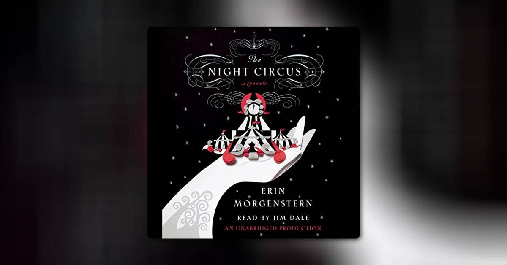

book report
draft bookreport TOCS draft2 draftthoughts
好的，我已经看过了你提供的链接。我会参考里面的角色译名来进行翻译，以确保准确性。
这是翻译并整理后的内容：
第一部分
耐儿和她外祖父的逃亡（第1-23章）
哪个场景/事件给你留下了最深刻的印象（最少200字） 迪克离开后，吉特赶到并与汤姆·斯科特打斗，救下了耐儿的金翅雀——奎尔普和汤姆本打算杀死它。基特把鸟带回了家。 第14章讲述了基特为了购买鸟食和生活必需品而寻找工作。他遇到了加兰夫妇，一对老年夫妇，他们的马很倔强。基特主动提出在他们拜访公证人威特顿先生时帮忙照看马匹。加兰德夫妇和威特顿先生讨论了他们的儿子亚伯，并签署了由公证人办事员查克斯特先生见证的法律文件。加兰夫妇多付了基特照看马匹的报酬，他同意日后通过工作来抵偿差额。基特现在有能力为家人和鸟儿提供更多东西了，他乐观地希望耐儿和她的外祖父可能在他家里。
你喜欢它吗（最少200字） 此外，从第1-3章的第一人称叙述者到第4章开始的第三人称全知视角，叙事视角的转变极大地增强了故事性。这种更广阔的视角是许多维多利亚时代小说的特点，它允许作者同时探索多条情节线，深入探究不同角色的思想和动机（如奎尔普的恶意或加兰夫妇的仁慈），并通过展现更广泛的社会层面来进行社会评论。它使读者能够同时关注耐儿和她外祖父的逃亡、奎尔普的阴谋以及基特命运的发展，从而创造出比单一视角所能达到的更丰富、更复杂的叙事织锦。
你认为接下来会发生什么（最少200字） 根据已确立的轨迹，我预计会有几个发展。耐儿和她的外祖父将继续他们艰难的逃亡之旅。他们的道路很可能充满艰辛，他们会遇到各种各样的人——有些人可能会提供短暂的善意，另一些人则可能试图利用他们的脆弱。外祖父的赌瘾仍然是一个重大的弱点；尽管他爱耐儿，但如果机会出现，他很有可能再次屈服于诱惑，从而进一步危及他们。 与此同时，奎尔普无疑会对他们的逃脱感到愤怒，并很可能会利用他所有的资源，包括唯唯诺诺的布拉斯先生，来追踪他们。他不是一个会轻易放弃感知到的债务或折磨机会的角色。他的追捕将对耐儿和她外祖父寻求安全的努力构成持续的、具有威胁性的阴影。
基特的故事则有望出现更积极的转折。他在加兰夫妇家的工作似乎将变得更加稳定。他固有的善良和勤奋很可能会使这对善良的夫妇更加喜爱他。我预测基特不会忘记耐儿，并将积极尝试打听她的消息，甚至可能利用他新获得的稳定生活来帮助搜寻。现在由他照料的金翅雀将不断提醒他这位朋友。查克斯特先生的嫉妒可能会给基特带来一些轻微的工作场所冲突，但这不太可能影响加兰夫妇对他的赏识。
第二部分
追捕与苦难（第24-53章）
现在出现了哪些角色？ 主要角色有：
- 耐儿·特兰特：善良、温柔的13岁女主角。
- 耐儿的外祖父：古玩店店主，深爱耐儿。
- 克里斯托弗（基特）·纳布尔斯：忠诚、善良的男孩，为耐儿的外祖父工作。
- 丹尼尔·奎尔普：残忍、善于操纵的侏儒，主要反派。
- 理查德（迪克）·斯威夫勒：异想天开、心地善良的年轻人，弗雷德·特兰特的朋友。
- 萨普森·布拉斯：肆无忌惮的律师，奎尔普的同伙。
- 萨拉（萨丽）·布拉斯：萨普森精明的妹妹兼法律合伙人。
- 贝齐·奎尔普：奎尔普胆小的妻子。
- 吉尼文太太：贝齐·奎尔普专横的母亲。
- 汤姆·斯科特：“翻跟斗的男孩”，奎尔普的仆人。
- 纳布尔斯太太：基特勤劳、慈爱的母亲。
- 雅各布·纳布尔斯和小纳布尔斯：基特的弟弟们。
- 加兰先生：善良、跛足的老绅士。
- 加兰太太：他开朗的妻子。
- 亚伯·加兰：他们安静、尽职的儿子。
- 威特顿先生：公证人，加兰夫妇的朋友。
- 查克斯特先生：威特顿事务所的办事员。
- 芭芭拉：加兰家的女仆，基特的恋人。
- 白维斯·马克斯：神秘的“单身绅士”（后揭示为耐儿的舅公）。
- 女侯爵（索福罗尼亚·斯芬克斯）：布拉斯家受忽视的女仆（她的真名后来揭晓）。
哪一个给你留下了最好的印象？ 迪克·斯威夫勒
分析这个角色的特点（最少200字） 理查德“迪克”·斯威夫勒最初表现为一个相当轻浮和不负责任的角色，似乎满足于与弗雷德·特兰特和丹尼尔·奎尔普等不太体面的人物为伍。他负债累累，言行 flamboyant，经常引用诗歌，摆出戏剧化的姿态。然而，正如他的姓氏“斯威夫勒”（Swiveller，意为转动者）恰当地暗示的那样，这种外在形象暗示了他潜在的可塑性和改变能力。 随着叙事的推进，特别是当奎尔普的注意力转移到别处后，迪克开始“转向”一条更正直的道路。他与女侯爵——布拉斯家受虐待的女仆——的互动成为这一转变的重要催化剂。他最初夸张的行为让她感到不适，而他随后决定改变自己的举止以缓解她的不安，这揭示了他初生的同情心，并表明他那 flamboyant 的形象可能一直是一种掩护。当他允许自己与女侯爵建立联系时，他的“真实本性”开始浮现。 这种不断发展的善良并非仅仅是被动的；迪克积极致力于纠正不公，最显著的是他努力为基特·纳布尔斯洗清罪名并使其重获自由。他对女侯爵的善意得到了回报，她的证词对他取得成功至关重要。最终，迪克的转变在他用遗产为女侯爵提供安全舒适的未来，使她摆脱贫困时达到顶峰。这种无私慷慨的行为是“耐儿外祖父希望为她实现的目标的完全实现版本”，但关键的区别在于，迪克拥有一种内在的韧性和足智多谋，使他即使在获得意外之财之前也能摆脱债务和不负责任的生活，这与永远挣扎的特兰特一家不同。
第三部分
结局与命运（第54-73章）
作者想通过这本书传达什么？ 对城市化和工业资本主义有害影响的尖锐批判，将肮脏、贪婪和污染的城市与理想化、更简单、更纯朴的乡村生活进行对比。 赌博的极度破坏性，阐明这种恶习如何腐蚀即使是善意的人，导致毁灭和对亲人的背叛。 出生在严酷、冷漠的世界或功能失调的家庭环境中的无辜儿童的极度脆弱性，突出了他们的苦难以及使这种苦难永久化的社会条件。
作者是如何传达这些信息的？（最少200字） 狄更斯通过生动的对比、令人心酸的人物弧光和象征性的场景巧妙地传达了这些信息。 为了阐释对城市化的批判与乡村理想的对比，他将“肮脏贪婪的伦敦市中心”和制造业城镇“烟雾弥漫的天空”与耐儿和她外祖父在乡村找到的“和平与自由”进行了鲜明对比。在城市里，历史和情感被贬低，就像奎尔普为了利润“清算了古玩店的全部存货”一样。相反，乡村社区珍视他们的过去，小心翼翼地保护着“废弃的教堂和古老的牧师住宅”。耐儿身体的衰弱显著地始于工业城镇，直接将城市凋敝与苦难联系起来，并预示了她的死亡。 赌博的破坏性通过耐儿的外祖父得到了有力的描绘。他最初“对耐儿的爱以及为她提供更好生活的愿望”因其赌瘾而扭曲。这种源于被误导的溺爱的“贪婪”，使他变成了一个“扭曲、偏执和虚伪的自己”，最终在他试图从自己孙女那里偷窃的可怕时刻达到顶峰。这种瘾是他们逃亡和持续不幸的主要催化剂，表明了赌博如何侵蚀道德品质并摧毁家庭纽带。 最后，狄更斯主要通过耐儿突出了无辜儿童的脆弱性。她固有的善良和纯洁使她在奎尔普之流主导的世界以及她外祖父过失的后果中航行时，其苦难显得更加悲惨。她对墓地的迷恋以及与悲伤的遭遇，例如与寡妇以及在制造业城镇因饥饿失去孩子的父亲的相遇，都强调了过早的、往往是可以避免的死亡这一主题。这些事例，特别是那些因“工业资本主义的条件”而死于“饥饿、暴露或疾病”的儿童，强调了无辜者往往是社会贪婪和恶劣环境的主要受害者。
结合书中的例子，说明你喜欢/不喜欢这本书（300字） 喜欢：
1. 连载出版与片段式结构
- 《老古玩店》是连载出版的。这种形式鼓励设置悬念、塑造令人难忘的角色，并融合幽默与悲情——所有这些特点都体现在《老古玩店》中。
2. 感伤主义与社会批判
- 《老古玩店》具有强烈的感伤主义色彩，尤其体现在小耐儿这个角色身上，她的纯真和苦难是小说情感冲击力的核心。
3. 戏剧化角色与情节剧
- 《老古玩店》包含了像丹尼尔·奎尔普（怪诞的反派）和布拉斯兄妹这样的戏剧化角色，以及耐儿旅途中的情节剧式片段。
4. 多情节线的使用
- 《老古玩店》运用了多条情节线，同时讲述了耐儿和她外祖父的旅程以及发生在伦敦的涉及基特、奎尔普等人的事件。
不喜欢： 结局，情节略显过于伤感，有时情节线不太清晰，篇幅过长。
part 1
Nell and Her Grandfather’s Flight (Chapters 1–23)
Plot Focus:
- Introduction of Nell, her grandfather, and the Old Curiosity Shop.
- The grandfather’s gambling addiction and mounting debts.
- Introduction of key characters: Quilp, Kit, and the Brasses.
- Nell and her grandfather are forced to flee London to escape Quilp and the creditors.
Key Turning Point:
- Nell and her grandfather leave the shop and begin their journey as wanderers.
The narrative perspective changes at the start of Chapter 4.
- Chapters 1–3: Told in the first person by the unnamed narrator.
- From Chapter 4 onward: The narrative shifts to a third-person omniscient perspective, which continues for the rest of the novel.
which scene/event left most impression (200 words minimum) As Dick leaves, Kit arrives and fights Tom Scott to rescue Nell’s linnet bird, which Quilp and Tom intended to kill. Kit takes the bird home. Chapter 14 sees Kit searching for work to buy birdseed and necessities. He encounters the Garlands, an elderly couple whose horse is obstinate. Kit offers to watch the horse while they visit Mr. Witherden, a notary. The Garlands and Mr. Witherden discuss their son, Abel, and sign legal documents witnessed by Mr. Chuckster, the notary’s clerk. The Garlands overpay Kit for his help with the horse, and he agrees to work off the difference later. Kit can now afford more for his family and the bird, and he optimistically hopes Nell and her grandfather might be at his home.
did you like it or not (200 words minimum)
Yes, I liked it. The analysis of Chapters 13-14 highlights how Kit stumbles into good fortune, which provides a welcome contrast to the hardships faced by other characters. The generosity of the Garlands is a “stunning change of pace,” and Kit’s determination to save Nell’s linnet bird, despite Quilp’s cruelty, is admirable. This act directly leads to his positive encounter with the Garlands because he needs birdseed. The symbolism of the linnet bird is also effective; its caging and subsequent care by Kit can be seen as him taking on Nell’s suffering, but also as a symbol of future unification, as the bird is known to fly in mixed flocks. This suggests Kit will be pivotal in bringing characters together. Furthermore, the shift in narrative perspective from the first-person narrator in Chapters 1-3 to a third-person omniscient view from Chapter 4 onwards greatly enhances the storytelling. This broader perspective is characteristic of many Victorian novels, allowing the author to explore multiple plotlines simultaneously, delve into the minds and motivations of various characters (like Quilp’s malice or the Garlands’ benevolence), and offer social commentary by presenting a wider slice of society. It allows the reader to follow Nell and her grandfather’s flight, Quilp’s machinations, and Kit’s developing fortunes concurrently, creating a richer and more complex narrative tapestry than a single viewpoint could achieve. Written in installments and dickens wanted it to change.
what do you think will happen next (200 words minimum) Given the trajectory established, I anticipate several developments. Nell and her grandfather will continue their arduous journey as fugitives. Their path will likely be fraught with hardship, and they will encounter a variety of people – some who might offer fleeting kindness, and others who might seek to exploit their vulnerability. The grandfather’s gambling addiction remains a significant weakness; despite his love for Nell, there’s a strong possibility he might succumb to temptation again if an opportunity arises, further endangering them. Meanwhile, Quilp will undoubtedly be furious at their escape and will likely use all his resources, including the subservient Mr. Brass, to track them down. He is not a character to let go of a perceived debt or an opportunity for torment. His pursuit will form a constant, menacing shadow over Nell and her grandfather’s attempts to find safety.
Kit’s story is poised for a more positive turn. His employment with the Garlands seems set to become more permanent. His inherent goodness and diligence will likely endear him further to the kind couple. I predict Kit will not forget Nell and will actively try to find news of her, perhaps even using his newfound stability to aid in a search. The linnet bird, now in his care, will serve as a constant reminder of his friend. Mr. Chuckster’s jealousy might create minor workplace conflicts for Kit, but it’s unlikely to derail the Garlands’ appreciation for him.
part 2
Pursuit and Hardship (Chapters 24–53)
Plot Focus:
- Nell and her grandfather’s journey through the English countryside, facing poverty and hardship.
- The parallel pursuit: Quilp’s machinations, the Brasses’ schemes, and the search for Nell by Kit and others.
- Kit’s wrongful arrest and imprisonment, orchestrated by Quilp.
- Nell and her grandfather find temporary refuge in various places, including the waxwork show and the church.
Key Turning Point:
- Kit is released from prison, and the search for Nell intensifies.
What characters have appeared now?
main ones are
- • Nell Trent: The kind, gentle 13-year-old protagonist.
- Nell’s Grandfather: Owner of the Curiosity Shop, devoted to Nell.
- Christopher (Kit) Nubbles: Loyal, good-hearted boy who works for Nell’s grandfather.
- Daniel Quilp: The cruel, manipulative dwarf and main antagonist.
- Richard (Dick) Swiveller: A whimsical, good-natured young man, friend of Fred Trent.
- Sampson Brass: Unscrupulous lawyer, associate of Quilp.
- Sarah (Sally) Brass: Sampson’s shrewd sister and law partner.
- Betsy Quilp: Quilp’s timid wife.
- Mrs. Jiniwin: Betsy Quilp’s domineering mother.
- Tom Scott: The “tumbling boy,” Quilp’s servant.
- Mrs. Nubbles: Kit’s hardworking, loving mother.
- Jacob Nubbles & Baby Nubbles: Kit’s younger brothers.
- Mr. Garland: Kind, club-footed elderly gentleman.
- Mrs. Garland: His cheerful wife.
- Abel Garland: Their quiet, dutiful son.
- Mr. Witherden: The notary, friend to the Garlands.
- Mr. Chuckster: Clerk in Witherden’s office.
- Barbara: The Garlands’ servant girl, Kit’s love interest.
- Bevis Marks: The mysterious “single gentleman” (later revealed as Nell’s great-uncle).
- Marchioness (Sophronia Sphynx): The neglected servant girl at the Brasses’ (her real name is revealed later).
which one left the best impression?
Dick Swiveller
analyze this character’s characteristics (200 words minimum)
Richard “Dick” Swiveller
At first, Dick seems little more than a somewhat comedic tag-along to Fred Trent and Daniel Quilp’s schemes. He owes money to many different shops and eateries, and he seems to be headed down the same path as Fred and Quilp. However, his last name hints at his malleability, and once Quilp occupies himself with torturing Kit and his family, Dick does in fact “turn” towards the good. His over-the-top theatrical behavior makes the Marchioness uncomfortable, so he changes his behavior to make her feel more at ease, which suggests that his prior persona was just a front to keep a distance between himself and others. Once he starts to let the Marchioness in, the reader sees more behavioral changes indicative of his true nature.
These actions pay off when Swiveller begins working to restore Kit’s good name and free him from prison. The Marchioness repays his kindness to her with her testimony, helping him accomplish his goals and rewarding him for his virtue. He also uses his inheritance to secure the Marchioness’s future, lifting her out of poverty and giving her a truly comfortable life. His actions are a fully realized version of what Nell’s grandfather hoped to accomplish for her. The main difference is that Dick had the means to live out of poverty before he received his inheritance, whereas the Trents never seemed able to escape their debts.
Richard “Dick” Swiveller initially presents as a rather frivolous and irresponsible character, seemingly content to drift along with less reputable figures like Fred Trent and Daniel Quilp. He is characterized by his debts and a flamboyant, theatrical demeanor, often quoting poetry and adopting dramatic airs. This outward persona, however, as his surname “Swiveller” aptly suggests, hints at an underlying malleability and capacity for change. As the narrative progresses, particularly once Quilp’s attention shifts elsewhere, Dick begins to “turn” towards a more virtuous path. His interactions with the Marchioness, the Brasses’ ill-treated servant girl, become a significant catalyst for this transformation. His initial over-the-top behavior makes her uncomfortable, and his subsequent decision to modify his conduct to ease her distress reveals a nascent empathy and suggests his flamboyant persona might have been a shield. As he allows himself to connect with the Marchioness, his “true nature” begins to surface. This evolving goodness is not merely passive; Dick actively works to rectify injustices, most notably in his efforts to clear Kit Nubbles’s name and secure his freedom from prison. His kindness towards the Marchioness is reciprocated when her testimony proves crucial to his success. Ultimately, Dick’s transformation culminates in him using his inheritance not for selfish pursuits, but to provide a secure and comfortable future for the Marchioness, lifting her from poverty. This act of selfless generosity stands as a “fully realized version of what Nell’s grandfather hoped to accomplish for her,” but with the crucial difference that Dick possessed an inherent resilience and resourcefulness that allowed him to navigate away from a life of debt and irresponsibility even before his financial windfall, unlike the perpetually struggling Trents.
part 3
Resolution and Fate (Chapters 54–73)
Plot Focus:
- The final stages of Nell and her grandfather’s journey; Nell’s declining health.
- Kit and his friends’ successful efforts to track down Nell.
- The fates of the main characters: Nell’s tragic death, the grandfather’s madness, and Quilp’s downfall.
- The resolution of the supporting characters’ stories.
What does the author want to convey through this book? A sharp critique of the detrimental effects of urbanization and industrial capitalism, contrasting the grimy, greedy, and polluted city with an idealized, simpler, and more virtuous rural existence. The profoundly destructive nature of gambling, illustrating how this specific vice can corrupt even well-intentioned individuals, leading to ruin and the betrayal of loved ones. The acute vulnerability of innocent children born into harsh, uncaring worlds or dysfunctional familial situations, highlighting their suffering and the societal conditions that perpetuate it.
How does the writer convey that? (200 words minimum) Dickens masterfully conveys these messages through vivid contrasts, poignant character arcs, and symbolic settings. To illustrate the urbanization critique versus rural ideal, he starkly contrasts the “grimy and greedy center of London” and the “smoke-filled sky” of the manufacturing town with the “peace and freedom” Nell and her grandfather find in the countryside. In the city, history and sentiment are devalued, as when Quilp “liquidates the entire inventory” of the Curiosity Shop for profit. Conversely, rural communities cherish their past, carefully preserving “the ruined church and old parsonage houses.” Nell’s physical decline notably begins in the industrial town, directly linking urban blight to suffering and foreshadowing her demise. The destructive nature of gambling is powerfully depicted through Nell’s grandfather. His initial “love for Nell and his desire to provide her with a better life” becomes twisted by his gambling addiction. This “greed,” born of misguided affection, transforms him into a “twisted, paranoid, and deceitful version of himself,” culminating in the horrifying moment he attempts to steal from his own granddaughter. This addiction is the primary catalyst for their flight and continued misfortunes, demonstrating how gambling erodes moral character and destroys familial bonds. Finally, Dickens highlights the vulnerability of innocent children primarily through Nell. Her inherent goodness and purity make her suffering all the more tragic as she navigates a world dominated by figures like Quilp and the consequences of her grandfather’s failings. Her attraction to churchyards and encounters with grief, such as with the widow and the father who lost his children to starvation in the manufacturing town, underscore the theme of early, often preventable, death. These instances, particularly the children dying from “starvation, exposure, or disease” due to “the conditions of industrial capitalism,” emphasize how the innocent are often the primary victims of societal greed and harsh environments.
END
Using examples from the book, state whether you like/dislike this book (300 words) Like:
1. Serial Publication and Episodic Structure
- All of Dickens’s early novels, including The Old Curiosity Shop, were published serially (in monthly or weekly installments).
- The success of The Pickwick Papers established Dickens’s reputation and the serial format, which he continued to use. This format encouraged cliffhangers, memorable characters, and a blend of humor and pathos—all features present in The Old Curiosity Shop.
2. Sentimentality and Social Critique
- Oliver Twist introduced a blend of social criticism (of workhouses, poverty, and crime) and sentimentality (the suffering of the innocent, like Oliver).
- The Old Curiosity Shop amplifies this sentimentality, especially in the character of Little Nell, whose innocence and suffering are central to the novel’s emotional impact.
3. Theatrical Characters and Melodrama
- Nicholas Nickleby features exaggerated villains (like Squeers) and comic side characters, as well as melodramatic plotlines.
- The Old Curiosity Shop continues this tradition with characters like Daniel Quilp (the grotesque villain) and the Brasses, and with melodramatic episodes in Nell’s journey.
4. The Use of Multiple Plotlines
- In Nicholas Nickleby, Dickens began to experiment with parallel plotlines and a large cast of characters.
- The Old Curiosity Shop further develops this, with the story following both Nell and her grandfather’s journey and the events back in London involving Kit, Quilp, and others.
Summary Table
| Novel | Years Published | Influence on The Old Curiosity Shop |
|---|---|---|
| The Pickwick Papers | 1836–1837 | Serial format, humor, episodic structure |
| Oliver Twist | 1837–1839 | Sentimentality, social critique, suffering innocence |
| Nicholas Nickleby | 1838–1839 | Melodrama, multiple plotlines, theatrical villains |
| The Old Curiosity Shop | 1840–1841 | Builds on all the above |
Dislike: ending bit too sentimental, plotlines sometimes not clear too long
why switch narrative perspective
order of dickens novels and impact
industrializaiontn humanity and victorian tuff
responding the the themes of oliver twist dark children innocence, powerless
family can be a detructive force her grandfather might be mrore desturctive than society
at the start granfather seems weird set the foot of something bad hes a bit monstrous and bad
nell tries to sotp him but granfather says bad stuff seems gentle but monstrous stuff focused on the ‘goal’
bad ending
nell pushes the story grandfather does nothing except when he is gambling ‘virtuous too good for the world’
quip frame kit villain pushes to marry nell for nonexistent ‘money’ gamble force grandfather doesnt care just wants money
three storylines compare recommend? where is the old curiosity shop bruh
some loose ends but still ok ending a bit overdone but just means dickens relates to his characters
combination of all his previous novels
recall notebook
Introduction 00:00
-
The Old Curiosity Shop is Charles Dickens’ fourth novel, and it is considered a very interesting book that was a sensation at its time of release, but is not currently regarded as one of Dickens’ best works, with some even citing it as an example of his worst writing 00:21.
-
The novel contains several interweaving stories, with the primary story focusing on Nell Trent and her grandfather, who owns the Old Curiosity Shop, an old antique shop, at the beginning of the novel 00:46.
-
The grandfather’s ownership of the shop is short-lived, as he quickly loses it due to his gambling debts, forcing him and Nell to leave the shop and live a life of poverty, with the novel following their travels as they struggle to survive 00:54.
-
The Old Curiosity Shop is part of a series of Dickens’ novels, and it is worth analyzing to understand its significance and flaws, with some considering it one of Dickens’ better early novels, despite having some flaws 00:10.
-
The novel’s story is complex, with the primary plot following Nell and her grandfather as they go through the highs and lows of struggling to survive, making it a compelling story to explore and discuss 01:06.
A Rocky Start 01:13
-
The Old Curiosity Shop begins with a narrative in the first person, told from the perspective of a character who encounters Little Nell one night and visits the old curiosity shop with her, but this framing device disappears after about three chapters and switches to a third-person narrator, which can be jarring for readers 01:13.
-
The reason for this narrative switch is that Charles Dickens initially intended The Old Curiosity Shop to be part of another series called Master Humphrey’s Clock, but he decided to abandon this format and focus on The Old Curiosity Shop as a standalone story 01:56.
-
Despite the rocky start, the early part of the book creates good tension as the reader tries to understand what is happening with Nell and her grandfather, and their family drama, including a scene where Nell is left alone by her grandfather in the creepy old antique shop 02:37.
-
The novel explores the theme of the powerlessness of children, but unlike Oliver Twist, where the damage is caused by society, The Old Curiosity Shop focuses on the destructive force of family, particularly the grandfather’s gambling debts and obsession, which ultimately lead to Nell’s downfall 03:39.
-
Dickens’s portrayal of the grandfather is complex, showing him as a soft-spoken, gentle old man who loves his granddaughter, but also as a cruel and monstrous figure due to his gambling obsession, which is evident in a scene where he treats Nell coldly and says hurtful things to her 04:27.
-
The novel also features a mirroring effect, where Nell is surrounded by ancient objects at the beginning and end of the novel, first in the old curiosity shop and later in an ancient church, which adds depth to the story 03:02.
-
The character of the old man in the story has a dark and evil side that emerges due to his obsession, which is a well-developed aspect of his personality, and this contrast between his gentle and evil sides is particularly notable 04:54.
-
Nell’s death in the story is a significant difference from Oliver Twist, as it does not have a happy ending, and this was actually an idea suggested by John Foster, a friend of Charles Dickens, rather than Dickens himself 05:01.
-
The decision to kill off Nell was likely a good idea, as it adds variety to the typical Dickens narrative of happy endings for orphans, and allows for a more nuanced exploration of the characters and their experiences 05:07.
-
Despite her reputation for being insipid and weak, Nell is actually a more active and engaging character than she is often given credit for, as she is the instigator of much of the action in the story and makes key decisions, such as deciding to leave when her grandfather’s gambling becomes a problem 05:35.
-
In comparison to Oliver, Nell is a more interesting and dynamic character, as she drives the plot forward and takes initiative, whereas Oliver is often passive and reliant on others, except for a few notable moments, such as when he stands up for his mother 06:06.
-
Nell’s character can be seen as a more engaging archetype for Dickens, as she embodies the virtuous and innocent type, but also has a more nuanced and active personality that adds depth to the story 06:17.
Three Storylines 06:33
-
The Old Curiosity Shop has three main protagonists, each with their own intersecting storyline, including Little Nell and her grandfather, who become beggars and must find their way in the world, Kit, a young boy who worked for Nell and her grandfather and gets sacked at the beginning of the novel, and Richard Swiveler, a friend of Nell’s brother Frederick, who is initially portrayed as a comic secondary villain but eventually becomes a good-hearted hero 06:33.
-
Kit’s storyline involves trying to make his own way in the world, but he is framed for a crime he didn’t commit by the evil villain Daniel Quilp, leading to a dramatic court case, which is one of the best parts of the book 06:50.
-
Richard Swiveler’s storyline involves being persuaded by Frederick to marry Nell in order to get hold of the grandfather’s secret money, but he eventually becomes a good-hearted character and his storyline is entertaining due to his character’s twist and unexpected development 07:21.
-
Daniel Quilp is a hunchbacked, crooked dwarf who is an apologetically evil villain, constantly causing mischief and terror, and is the instigator of much of the suffering in the story, including the grandfather’s loss of money and Kit’s framing for a crime 08:11.
-
The three storylines blend well together, with each having their own moments, and Little Nell and her grandfather’s journey is reminiscent of The Pickwick Papers, but much darker, with many of their meetings with people being threatening or harmful 09:08.
-
One of the notable characters that Little Nell and her grandfather meet during their journey is Mrs. Jarley, who runs a traveling waxworks museum and is a fantastic, gregarious character who helps them and provides a sense of hope that things might work out 09:42.
-
The character of Nell is well-liked, and her episode in the novel is particularly enjoyable, although some parts of her story are uneven, such as when she and her grandfather arrive at The Village, where the narrative spends too long in a holding pattern, setting the stage for her eventual death 10:02.
-
The story of Dick Swiveler is a favorite, as he initially appears to be a lackey but eventually becomes a significant character who resolves major plot points, with his story taking a turn when he gets a job with the lawyer Mr. Brass and his sister Sally Brass 10:43.
-
The characters of Mr. Brass, Sally Brass, and their servant girl, who Swiveler calls the Marchioness, are well-developed and interesting, with the Marchioness being a shrewd character who forms a good relationship with Swiveler 11:14.
-
Kit is a character who is not disliked, but his storyline is somewhat mundane until he gets framed for a crime, at which point his storyline becomes more engaging, particularly when compared to the more dynamic storylines of Nell and Swiveler 11:39.
-
The three storylines of Nell, Swiveler, and Kit work well together and integrate effectively, demonstrating Dickens’ improvement in his writing, as he successfully combines pastoral elements, comedy, and darker moments with well-developed characters 12:17.
-
Dickens’ development as a writer is evident in The Old Curiosity Shop, as he ties together various elements from his previous novels to create a cohesive and engaging narrative, with a clear through line underlying the episodic structure of the story 12:41.
Nells Death 12:58
-
The decision to kill Nell in Charles Dickens’ novel was not Dickens’ own idea, but rather his friend John Foster’s, which has changed the view on Nell’s death and given a new appreciation for it 12:58.
-
Nell’s death scene is often criticized for being overly sentimental and saccharine, with Oscar Wilde’s quote being a famous example of this criticism, but it is possible that this criticism has become a cliche and may not entirely be true 13:24.
-
Charles Dickens was very attached to his characters, including Nell, and his biography reveals that he was obsessed with them, which may have contributed to the overly sentimental death scene as he felt guilty about killing her off 14:22.
-
The death scene can be seen as a reflection of Dickens’ creative process and his relationship with his characters, making it an interesting aspect of the story, but it is still considered a flaw in the writing as it is an example of the novelist intruding into the story 15:11.
-
Despite the flaws, the buildup to Nell’s death is well done and Dickens effectively plays with the audience’s emotions, making the scene a sensation at the time, and some parts of the death scene can be seen as beautifully poetic 16:36.
Missed Opportunities and Loose Ends 16:51
-
The character of Frederick, Nell’s brother, is introduced at the beginning of the novel, setting up an antagonism between him and the grandfather, but he is largely absent from the rest of the story, only receiving a passing mention at the end, which seems bizarre and jars with the narrative 17:16.
-
The character of The Marchioness is entertaining, but her presence in the story feels like a missed opportunity, as she is not given enough time to develop, and her interesting personality traits, such as her willingness to listen in on conversations and steal, are not fully explored 18:28.
-
The Marchioness’s character may have been downplayed to avoid competition with Nell, as both are young women who suffer, but this decision is seen as a shame, as The Marchioness is considered a great and interesting character 19:37.
-
The death of Daniel Quilp, which occurs by accident in a dark and slippery area by the docks, has a certain poetic justice to it, but the fact that it is an accident makes it less satisfying than a more intentional death or arrest would have been 20:04.
-
Despite the unsatisfying resolution of Quilp’s character, the scene of his death is well-written and gruesome, showcasing Dickens’s skill at writing scary death scenes 21:01.
Conclusion 21:14
-
The Old Curiosity Shop is considered a fantastic book, despite having some weaknesses, and is seen as the culmination of all of Charles Dickens’s earlier novels, combining elements from works like The Pickwick Papers and Oliver Twist, with an overarching narrative and character storylines, such as Kit’s, that work well together 21:14.
-
The book brings together various themes and elements from Dickens’s previous works, including pastoral and child-focused storylines, and features characters trying to make their way in the world, similar to Nicholas Nickleby, with some loose ends and inconsistencies in the framing narrative, particularly with regards to Frederick and the Marchioness 21:26.
-
The ending of the book is somewhat sentimental and overdone, but provides insight into Dickens’s relationship with his characters, and overall, the book is enjoyable, with a more positive assessment on a second reading compared to the initial one 21:50.
-
Readers are invited to share their thoughts on The Old Curiosity Shop, including how it compares to Dickens’s other earlier novels, and whether they consider it the best among his works, in order to discuss and share opinions 22:12.
wikipedia


-
[
-
[
](https://en.wikipedia.org/wiki/The_Old_Curiosity_Shop#Plot)
-
[
](https://en.wikipedia.org/wiki/The_Old_Curiosity_Shop#Framing_device)
-
[
](https://en.wikipedia.org/wiki/The_Old_Curiosity_Shop#Characters)
-
-
[
](https://en.wikipedia.org/wiki/The_Old_Curiosity_Shop#Major)
-
-
[
](https://en.wikipedia.org/wiki/The_Old_Curiosity_Shop#Literary_significance_and_criticism)
-
[
](https://en.wikipedia.org/wiki/The_Old_Curiosity_Shop#Allusions_to_actual_history_and_geography)
-
-
[
](https://en.wikipedia.org/wiki/The_Old_Curiosity_Shop#The_Old_Curiosity_Shop)
-
-
[
](https://en.wikipedia.org/wiki/The_Old_Curiosity_Shop#Adaptations)
-
[
](https://en.wikipedia.org/wiki/The_Old_Curiosity_Shop#Major_editions)
-
[
](https://en.wikipedia.org/wiki/The_Old_Curiosity_Shop#References)
-
[
](https://en.wikipedia.org/wiki/The_Old_Curiosity_Shop#External_links)
The Old Curiosity Shop
Tools
From Wikipedia, the free encyclopedia
For adaptations of the novel, see The Old Curiosity Shop (disambiguation). For the London shop that inspired Dickens, see Clare Market. For the Seattle business, see Ye Olde Curiosity Shop.
| You can help expand this article with text translated from the corresponding article in French. (February 2019) Click [show] for important translation instructions. |
| The Old Curiosity Shop | |
Cover, the serial in Master Humphrey’s Clock, 1840 | |
| Author | Charles Dickens |
| Illustrator | George Cattermole Hablot Knight Browne (Phiz) Samuel Williams Daniel Maclise |
| Cover artist | George Cattermole |
| Language | English |
| Genre | Novel |
| Published | Serialised April 1840 – February 1841;[1] book format 1841 |
| Publisher | Chapman & Hall London |
| Publication place | England |
| Media type | |
| Preceded by | Nicholas Nickleby |
| Followed by | Barnaby Rudge |
| Text | The Old Curiosity Shop at Wikisource |
{kind=link}
The Old Curiosity Shop is the fourth novel by English author Charles Dickens; being one of his two novels (the other being Barnaby Rudge) published along with short stories in his weekly serial Master Humphrey’s Clock, from 1840 to 1841. It was so popular that New York readers reputedly stormed the wharf when the ship bearing the final instalment arrived in 1841.[2]
The Old Curiosity Shop was printed in book form in 1841. Queen Victoria read the novel that year and found it “very interesting and cleverly written”.[3]
The plot follows the journey of Nell Trent and her grandfather, both residents of The Old Curiosity Shop in London, whose lives are thrown into disarray and destitution due to the machinations of an evil moneylender and the grandfather’s addiction to gambling.
Plot
{kind=link}
Old Curiosity Shop, Portsmouth Street, 1884 by Philip Norman
The Old Curiosity Shop tells the story of Nell Trent, a beautiful and virtuous young girl of “not quite fourteen”. An orphan, she lives with her maternal grandfather (whose name is never revealed) in his shop of odds and ends. Her grandfather loves her dearly, and Nell does not complain, but she lives a lonely existence with almost no friends her own age. Her only friend is Kit, an honest boy employed at the shop, whom she is teaching to write.
Secretly obsessed with ensuring that Nell does not die in poverty as her parents did, her grandfather attempts to provide Nell with a good inheritance through gambling at cards. He keeps his nocturnal games a secret, but borrows heavily from the evil Daniel Quilp, a malicious, grotesquely deformed, hunchbacked dwarf moneylender. In the end, he gambles away what little money they have, and Quilp seizes the opportunity to take possession of the shop and evict Nell and her grandfather. Her grandfather suffers a breakdown that leaves him bereft of his wits, and Nell takes him away to the Midlands of England, to live as beggars.
Convinced that the old man has stored up a large fortune for Nell, her wastrel older brother, Frederick, convinces the good-natured but easily led Dick Swiveller to help him track Nell down, so that Swiveller can marry Nell and share her supposed inheritance with Frederick. To this end, they join forces with Quilp, who knows full well that there is no fortune, but sadistically chooses to ‘help’ them in order to enjoy the misery it will inflict on all concerned.
Quilp begins to try to track Nell down, but the fugitives are not easily discovered. To keep Dick Swiveller under his eye, Quilp arranges for him to be taken as a clerk by Quilp’s lawyer, Mr. Brass. At the Brass firm, Dick befriends the mistreated maidservant and nicknames her ‘the Marchioness’.
Nell, having fallen in with a succession of characters, some villainous and some kind, finally succeeds in leading her grandfather to safety in a far-off village (identified by Dickens as Tong, Shropshire), but this comes at a considerable cost to Nell’s health.
Meanwhile, Kit has found new employment with the kind Mr and Mrs Garland. Here he is contacted by a mysterious ‘single gentleman’ who is looking for news of Nell and her grandfather. The ‘single gentleman’ and Kit’s mother go after them unsuccessfully, and encounter Quilp, who is also hunting for the runaways. Quilp forms a grudge against Kit and has him framed as a thief. Kit is sentenced to transportation. However, Dick Swiveller proves Kit’s innocence with the help of his friend the Marchioness. Quilp is hunted down and dies trying to escape his pursuers.
At the same time, a coincidence leads Mr Garland to knowledge of Nell’s whereabouts, and he, Kit, and the single gentleman (who turns out to be the younger brother of Nell’s grandfather) go to find her. Sadly, by the time they arrive, Nell has died as a result of her arduous journey. Her grandfather, already mentally infirm, refuses to admit she is dead and sits every day by her grave waiting for her to come back until, a few months later, he dies himself.
Framing device
Master Humphrey’s Clock was a weekly serial that contained both short stories and two novels (The Old Curiosity Shop and Barnaby Rudge). Some of the short stories act as frame stories to the novels.
Originally the conceit of the story was that Master Humphrey was reading it aloud to a group of his friends, gathered at his house around the grandfather clock in which he eccentrically kept his manuscripts. Consequently, when the novel begins, it is told in the first person, with Master Humphrey as the narrator. However, Dickens soon changed his mind about how best to tell the story, and abandoned the first-person narrator after chapter three. Once the novel was ended, Master Humphrey’s Clock added a concluding scene, where Master Humphrey’s friends (after he has finished reading the novel to them) complain that the ‘single gentleman’ is never given a name; Master Humphrey tells them that the novel was a true story, that the ‘single gentleman’ was in fact himself, and that the events of the first three chapters were fictitious, intended only to introduce the characters. This was Dickens’s after-the-fact explanation of why the narrator disappeared and why (if he was their near relation) he gave no sign in the first three chapters of knowing who they were. At least one editor thinks this device “need not be taken seriously.”[4][full citation needed]
Dickens’s original artistic intent was to keep the short stories and the novels together, and the short stories and the novels were published in 1840 in three bound volumes under the title Master Humphrey’s Clock, which retains the original full and correct ordering of texts. However, Dickens himself cancelled Master Humphrey’s Clock before 1848, and describes in a preface to The Old Curiosity Shop that he wishes the story to not be tied down to the miscellany within which it began.[5][full citation needed] Most later anthologies published the short stories and the novels separately.
Characters
Major
{kind=link}
“At Rest” Illustration by George Cattermole
- Nell Trent, the novel’s main character. Portrayed as infallibly good and angelic, she leads her grandfather on their journey to save them from misery. Her health gradually becomes weaker throughout the journey.
- Nell’s Grandfather, Nell’s guardian. After losing both his wife and daughter, he sees Nell as the embodiment of their good spirits. His grandson Fred is seen as the successor to his son-in-law, who he felt unworthy of his daughter. As such, he shows him no affection. He is paranoid about falling into poverty and gambles to try to stave that off; as his money runs out, he turns to Quilp for loans to continue to furnish for Nell the life he feels she deserves. After believing Kit has revealed his secret addiction, he falls ill and is mentally unstable afterwards. Nell then protects him as he had done for her.
- Christopher “Kit” Nubbles, Nell’s friend and servant. He watches out for Nell when she is left in the shop alone at night (although she doesn’t know he’s there) and will ‘never come home to his bed until he thinks she safe in hers’. After Quilp takes over the shop, Kit offers Nell a place in his house. His mother is concerned about his attachment to Nell, and at one point jokes, ‘some people would say that you’d fallen in love with her’, at which Kit becomes very bashful and tries to change the subject. He is later given a position at the Garlands’ house, and becomes an important member of their household. His dedication to his family earns him the respect of many characters and the resentment of Quilp. He is framed for robbery, but is later released and joins the party traveling to recover Nell.
{kind=link}
Quilp by ‘Kyd’ (1889)
- Daniel Quilp, the novel’s primary villain. He mistreats his wife, Betsy, and manipulates others to his own ends through a false charm he has developed over the years. He lends money to Nell’s grandfather and takes possession of the curiosity shop during the old man’s illness (which he had caused by revealing his knowledge of the old man’s bad gambling habit). He uses sarcasm to belittle those he wishes to control, most notably his wife, and takes a sadistic delight in the suffering of others. He eavesdrops so as to know all of ‘the old man’s’ most private thoughts, and teases him, saying ‘you have no secrets from me now’. He also drives a wedge between Kit and the old man (and as a result between Kit and Nell) by pretending it was Kit who told him about the gambling.
- Richard “Dick” Swiveller, in turn, Frederick Trent’s manipulated friend, Sampson Brass’s clerk, and the Marchioness’ guardian and eventual husband. He delights in quoting and adapting literature to describe his experiences. He is very laid-back and doesn’t seem to worry about anything, despite the fact that he owes money to just about everybody. Following Fred’s departure from the story, he becomes more independent and eventually is seen as a strong force for good, securing Kit’s release from prison and the Marchioness’s future. His transformation from an idle and vacant youth to a key helpmate bridges the depiction of the main characters that are either mostly villainous or goodly in nature.
- The Single Gentleman, who is never named, is the estranged younger brother of Nell’s grandfather. He leads the search for the travelers after taking lodging in Sampson Brass’ rooms and befriending Dick, Kit, and the Garlands.
Minor
- Mrs. Betsy Quilp, Quilp’s mistreated wife. She is mortally afraid of her husband but appears to love him in spite of everything, as she was genuinely worried when he disappeared for a long period.
- Mr. Sampson Brass, an attorney (what would now be called a solicitor) of the Court of the King’s Bench. A grovelling, obsequious man, he is an employee of Mr. Quilp, at whose urging he frames Kit for robbery.
- Miss Sarah “Sally” Brass, Mr. Brass’ obnoxious sister and clerk. She is the real authority in the Brass firm. She is occasionally referred to as a “dragon”, and she mistreats the Marchioness. Quilp makes amorous advances towards her, but is rebuffed.
- Mrs. Jarley, proprietor of a travelling waxworks show, who takes in Nell and her grandfather out of kindness. However, she only appears briefly.
- Frederick Trent, Nell’s worthless older brother, who is convinced that his grandfather is secretly wealthy (when in actuality he was the primary cause of the old man’s poverty, according to the single gentleman). Initially a major character in the novel and highly influential over Richard Swiveller, he is dropped from the narrative after chapter 23. Briefly mentioned as travelling to Great Britain and the wider world following his disappearance from the story, before being found injured and drowned in the River Seine after the story’s conclusion. The character was named after the novelist’s younger brother, Frederick Dickens.[6]
- Mr. Garland, a kind-hearted man, father of Abel Garland and employer of Kit.
- The Small Servant, Miss Brass’ maidservant. Dick Swiveller befriends her and, finding that she does not know her age or name (Sally Brass simply refers to her as “Little Devil”) or parents, nicknames her “The Marchioness” and later gives her the name Sophronia Sphynx. In the original manuscript, it is made explicit that the Marchioness is in fact the illegitimate daughter of Miss Brass, possibly by Quilp, but only a suggestion of this survived in the published edition.
- Isaac List and Joe Jowl, professional gamblers. They are fellow guests at the public house where Nell and her grandfather, unable to get home, pass a stormy night. Nell’s grandfather is unable to resist gambling with them and fleeces Nell of what little money she has to this end. That same night, he also robs her of even more money.
- Mr. Chuckster, the dogsbody of the notary Mr. Witherden, who employs Mr. Abel Garland. He takes a strong dislike to Kit after Mr. Garland overpays Kit for a job and Kit returns to work off the difference; he shows his dislike at every opportunity, calling Kit ‘Snobby’.
- Mr. Marton, a poor schoolmaster. He befriends Nell and later inadvertently meets her and her grandfather on the roads. Nell approaches him to beg for alms, not realising who he is. She faints from a combination of shock and exhaustion, and, realising she is ill, he takes her to an inn and pays for the doctor, and then takes her and her grandfather to live with him in the distant village where he has been appointed parish clerk.
- Thomas Codlin, proprietor of a travelling Punch and Judy show.
- Mr. Harris, called ‘Short Trotters’, the puppeteer of the Punch and Judy show.
- Barbara, the maidservant of Mr. and Mrs. Garland and future wife of Kit.
- The Bachelor, brother of Mr. Garland. Lives in the village where Nell and her grandfather end their journey, and unknowingly alerts his brother to their presence through a letter.
- Mrs. Jiniwin, Mrs. Quilp’s mother and Quilp’s mother-in-law. She resents Quilp for the way he treats her daughter, but is too afraid to stand up to him.
Literary significance and criticism
Probably the most widely repeated criticism of Dickens is the remark reputedly made by Oscar Wilde that “one must have a heart of stone to read the death of little Nell without laughing.”[7] The scene of Nell’s death is not actually part of the text, however. Of a similar opinion was the poet Algernon Swinburne, who commented that “a child whom nothing can ever irritate, whom nothing can even baffle, whom nothing can ever misguide, whom nothing can ever delude, and whom nothing can ever dismay, is a monster as inhuman as a baby with two heads”.[8]
The Irish leader Daniel O’Connell famously burst into tears at the finale, and threw the book out of the window of the train in which he was travelling.[9]
The excitement surrounding the conclusion of the series was unprecedented. (However, stories that Dickens fans stormed the docks in New York City, eager for the latest installment of the novel, or news of it, are apocryphal.)[10] In 2007, many newspapers claimed that the excitement at the release of the last instalment of The Old Curiosity Shop was the only historical comparison that could be made to the excitement at the release of the last Harry Potter novel, Harry Potter and the Deathly Hallows.[11]
The Norwegian author Ingeborg Refling Hagen is said to have buried a copy of the book in her youth, stating that nobody deserved to read about Nell, because nobody would ever understand her pain. She compared herself to Nell, because of her own miserable situation at the time.[citation needed]
Allusions to actual history and geography
The Old Curiosity Shop
.jpg){kind=link}
The Old Curiosity Shop, London

Wikimedia Commons has media related to The Old Curiosity Shop, 13–14 Portsmouth Street.
A shop named “The Old Curiosity Shop” can be found at 13–14 Portsmouth Street, Holborn, London, WC2A 2ES, and is now owned by the London School of Economics.[12] The building dates back to the sixteenth century (1567)[13] in an area known as Clare Market, but the shop name was added after the novel was released, as it was thought to be the inspiration for Dickens’s description of the antique shop.[14] At one time it functioned as a dairy on an estate given by King Charles II to one of his many mistresses. It was built using timber from old ships, and survived the bombs of World War II. The shop was restored in 2023 to repair structural problems and will be rented out again as a shop.[15][16]
The Route They Took[17]
- Nell and her grandfather meet Codlin and Short in a churchyard in Aylesbury.
- The horse races where Nell and her grandfather go with the show people are at Banbury.
- The village where they first meet the schoolmaster is Warmington, Warwickshire.
- They meet Mrs. Jarley near the village of Gaydon, Warwickshire.
- The town where they work at Jarley’s Waxworks is Warwick.
- The heavily industrialised town where Nell spends the night by the furnace is Birmingham (after they have travelled on the Warwick and Birmingham Canal).
- The town in which Nell faints and is rescued by the school master is Wolverhampton in the Black Country.
- The village where they finally find peace and rest and where Nell dies is Tong, Shropshire.
Other real locations used in the novel include London Bridge, Bevis Marks, Finchley, and Minster-on-Sea.
It is reported by local Coventry historian David McGrory that Charles Dickens used Coventry’s Whitefriars gatehouse in The Old Curiosity Shop. This gatehouse building still exists in Much Park Street.[18]
Adaptations
Lotta Crabtree performed for years as Nell in Little Nell and the Marchioness.[19]
{kind=link}
Dickens and Little Nell, an 1890 statue by Francis Edwin Elwell exhibited in Philadelphia
- There were several silent film adaptations of the novel including two directed by Thomas Bentley:
- The Old Curiosity Shop (1913)
- The Old Curiosity Shop (1921)
- Nelly, an opera based on the novel, by Italian composer Lamberto Landi, was composed in 1916; it premiered in Lucca in 1947.[20]
- The first talkie version was a 1934 British film starring Hay Petrie as Quilp.
- The novel was serialised for television by the BBC in 1962, starring Patrick Troughton as Quilp. No recordings of this production are known to exist.[21]
- A British musical version of The Old Curiosity Shop (titled Mr. Quilp in the United States) was released in 1975. The filmmakers were hoping to cash in on the recent success of Oliver!, which was also based on a Dickens classic, but the film was notably unsuccessful.
- An anime adaptation, Sasurai no Shoujo Nell (Wandering Girl Nell), aired in Japan from 1979 to 1980.[22]
- In 1979, a nine-part miniseries, featuring Natalie Ogle as Nell and Trevor Peacock as Quilp, was created by the BBC and later released on DVD. There was no Frederick character and the story ends with the grandfather mourning at Nell’s grave.
- In 1984, an animated version was produced by Burbank Films in Australia.
- In 1995, Tom Courtenay and Peter Ustinov starred in a Disney made-for-television film[23] adaptation as Quilp and the grandfather, with Sally Walsh[24] as Nell.
- A BBC Radio 4 adaptation was broadcast in 1998. The production starred Tom Courtenay as Quilp, Denis Quilley, Michael Maloney and Teresa Gallagher.
- A second adaptation for BBC Radio 4, first broadcast in 2002-03,[25] was narrated by Alex Jennings, with Emily Chenery (Nell), Phil Daniels (Quilp), Daniel Bliss (Kit), Trevor Peacock (grandfather), Clive Swift, Anna Massey and Julia McKenzie.
- A television film adaptation was produced by ITV, broadcast in the UK on 26 December 2007, and repeated on 14 December 2008.[26]
- Little Nell is featured in the Philadelphia, Pennsylvania, sculptural group Dickens and Little Nell (1890).
- Nell and her grandfather are featured prominently in the BBC’s 2015 Christmas drama Dickensian, which brings together many of Dickens’s iconic characters in one story.
- Russell T. Davies has expressed interest in adapting the novel for television.[27]
Major editions
- 1840–1841, UK, Chapman and Hall, Pub date (88 weekly parts) April 1840 to November 1841, Serial as part of Master Humphrey’s Clock
- 1841, UK, Chapman and Hall (ISBN not used), Pub date ? ? 1841, hardback (first edition)
- 1870, UK, Chapman and Hall (ISBN not used), Hardback
- 1904, NY, Thomas Y. Crowell (ISBN not used), Pub date ? ? 1904, leatherbound
- 1972, UK, Penguin English Library ISBN 0-14-005436-7, with extensive notes; pub date ? 1972, reprinted six times
- 1995, USA, Everyman’s Library ISBN 0-460-87600-7, Pub date ? ? 1995, paperback
- 1997, UK, Clarendon Press (Oxford University Press) ISBN 0-19-812493-7, Pub date 13 November 1997, hardback. This is considered the definitive edition of the book.
- 2001, UK, Penguin Books Ltd ISBN 0-14-043742-8, Pub date 25 January 2001, paperback (Penguin Classic)
References
-
Garber, Megan (21 February 2013). “Serial Thriller”. The Atlantic. The Atlantic Media Company. Retrieved 16 June 2013.
-
“Queen Victoria’s Journals”. Princess Beatrice’s Copies. RA VIC/MAIN/QVJ (W). 5 March 1841. Retrieved 24 May 2013.
-
The editor of the Penguin Classic Books edition.
-
Charles Dickens – Preface to The Old Curiosity Shop, 1848 Cheap Edition
-
Peter Ackroyd ‘Dickens’ Published by Sinclair-Stevenson (1990) pg 266
-
Marcia Muelder Eaton. “Laughing at the Death of Little Nell: Sentimental Art and Sentimental People”, American Philosophical Quarterly Vol. 26, No. 4 (Oct. 1989), pp. 269-28
-
Swinburne, Algernon Charles (1914). “The Greatness of Dickens”. The Bookman. Charles Dickens. A Bookman extra number: 183.
-
Sam Leith, ‘I won’t be curbed by the timidity of the editor!’, The Telegraph, 8 October 2021.
-
“Wessel & Lieberman: Before Harry Potter It Was Little Nell”. Retrieved 2 December 2014.
-
Coldnoon (10 December 2015). “The Old Curiosity Shop”. Coldnoon. Archived from the original on 25 July 2020. Retrieved 2 May 2022.
-
am, OceanStryder | 11 December 2017 at 4:09 (21 May 2016). “The Old Curiosity Shop: A little piece of 16th century London with a literary link”. Memoirs of a Metro Girl. Retrieved 16 July 2020.
-
Stuff, Good. “The Old Curiosity Shop, St James’s, London”. britishlistedbuildings.co.uk.
-
“The restoration of Charles Dickens’ Old Curiosity Shop”. ianVisits. 13 July 2023. Retrieved 14 July 2023.
-
Patrick Jack (25 April 2025). “LSE seeks ideas for what to do with one of London’s oldest shops”. Times Higher Education.
-
The England of Dickens by Walter Dexter – London: Cecil Palmer 1925. Pages 172 to 188
-
David McGrory, “Charles Dickens”. The Wharncliffe Companion to Coventry: An A to Z of. Casemate Publishers, 2008.
-
Leiter, Samuel L. (20 December 2023). Brooklyn Takes the Stage: Nineteenth-Century Theater in the City of Churches. McFarland. ISBN 978-1-4766-5137-8.
-
Biography at treccani.it
-
“The Old Curiosity Shop”. IMDb. 19 March 1995.
-
“Dickens at Christmas on Radio 4”. BBC. 22 October 2002.
-
Shannon, Sarah (7 February 2007). “How ITV aims to lure viewers with quality drama”. The Independent. London. Archived from the original on 12 October 2008. Retrieved 25 May 2010.
- “Russell T Davies on A Very English Scandal: ‘I didn’t want it to be an attack on Jeremy Thorpe’”. The Telegraph. 16 May 2018.
External links

Wikimedia Commons has media related to The Old Curiosity Shop.
{kind=link}
Wikisource has original text related to this article:
Online editions
- The Old Curiosity Shop at Standard Ebooks
- The Old Curiosity Shop at Project Gutenberg (plain text and HTML)
- The Old Curiosity Shop public domain audiobook at LibriVox
- The Old Curiosity Shop at Internet Archive.
- The Old Curiosity Shop at Google Books (scanned books original editions illustrated)
Other sites
- The Old Curiosity Shop Map of Nell and her grandfather’s journey from London through the Midlands to journey’s end in Tong, Shropshire.
- The Old Curiosity Shop Review from ‘The Lectern’, March 2007.
- The Old Curiosity Shop London Information
{kind=link}
| - v - t - e Charles Dickens |
|---|
| - v - t - e Charles Dickens’s The Old Curiosity Shop |
|---|
-
This page was last edited on 25 April 2025, at 20:12 (UTC).
-
Text is available under the Creative Commons Attribution-ShareAlike 4.0 License; additional terms may apply. By using this site, you agree to the Terms of Use and Privacy Policy. Wikipedia® is a registered trademark of the Wikimedia Foundation, Inc., a non-profit organization.
-

-

audible blog
The Old Curiosity Shop by Charles Dickens
Follow the plight of angelic Little Nell Trent and her grandfather in this heart-wrenching tale from Victorian England’s most famous and influential storyteller.
Summary
The Old Curiosity Shop is one of Charles Dickens’s most beloved and controversial novels. First published in serial form between 1840-1841, it tells the heart-wrenching tale of Little Nell Trent and her grandfather as they flee from the villainous dwarf Daniel Quilp. Dickens’s sentimental portrayal of Little Nell’s plight and suffering deeply moved Victorian audiences, reportedly causing grown men to weep openly. Later, critics like Oscar Wilde famously mocked the novel’s pathos. Despite such criticism, The Old Curiosity Shop remains one of Dickens’s most popular works, admired for its vivid characters and gripping narrative.
Plot
The Old Curiosity Shop follows Nell Trent, a virtuous young girl who lives with her grandfather in his curiosity shop in London. Her grandfather, obsessed with providing Nell a good inheritance, secretly gambles away their money and borrows heavily from the evil dwarf moneylender Daniel Quilp. When Quilp seizes the shop, Nell and her grandfather flee London to live as beggars in the English Midlands.
Meanwhile, Nell’s wastrel brother Frederick convinces his friend Dick Swiveller to help track down Nell, believing she has a fortune. They join forces with Quilp, who knows there is no fortune but sadistically wants to cause misery. As Nell and her grandfather journey through England, they encounter various characters both kind and evil. Quilp continues trying to hunt them down.
Back in London, the kindhearted Kit, who once worked at the curiosity shop, finds new employment with the Garland family. A mysterious “single gentleman” contacts Kit looking for news of Nell. Kit is later framed for theft by Quilp but proven innocent with help from Dick Swiveller and a servant girl nicknamed “the Marchioness.” Quilp dies while trying to escape his pursuers.
Eventually, Mr. Garland learns Nell’s location and sets out with Kit and the single gentleman, who is revealed to be Nell’s great-uncle, to find her. By the time they arrive, however, Nell has died from the hardships of her journey. Her grandfather, mentally unstable, spends his days sitting by her grave until he passes away a few months later.
Themes
-
Good vs evil
-
The effects of gambling addiction
-
The journey as a metaphor for life
-
The power of friendship and loyalty
-
Social injustice and poverty in Victorian England
-
The idealization of childhood and death
Setting
The Old Curiosity Shop is set in England in the 1820s, during the early Victorian era. The story primarily takes place in London and the English Midlands, reflecting the stark contrasts between urban and rural life during this period of rapid industrialization and social change.
The titular curiosity shop is located in London, likely inspired by a 16th-century building in Holborn that still stands. As Nell and her grandfather flee the city, the novel depicts various towns and villages across the Midlands, including Warwick, Birmingham, and Wolverhampton. Their journey provides Dickens the opportunity to paint a vivid portrait of England’s diverse landscapes and communities.
The final scenes unfold in the village of Tong, Shropshire, where Nell and her grandfather find refuge. This picturesque rural setting, with its ancient church and tranquil surroundings, serves as a poignant contrast to the grim urban environments encountered earlier in the novel. Through these varied locales, Dickens crafts a rich tapestry of early 19th-century English life, from bustling city streets to pastoral countryside.
Characters
-
Nell Trent: The protagonist, a young woman around 14 years old. Virtuous, innocent, and selfless, Nell cares for her grandfather and leads him on their journey to escape poverty. Her health gradually declines as she sacrifices herself for others. Nell embodies purity and goodness in the face of hardship.
-
Nell’s Grandfather: Nell’s unnamed guardian who is obsessed with providing her an inheritance. He develops a gambling addiction trying to win money for Nell, falling into debt with Quilp. After a mental breakdown, he becomes unstable, and Nell must protect him. His love for Nell is his defining characteristic, though it leads to their downfall.
-
Daniel Quilp: The primary villain. A malicious, deformed dwarf moneylender who delights in others’ suffering. He takes over the curiosity shop and pursues Nell and her grandfather. Quilp is cruel, manipulative and sadistic, tormenting his wife and all those around him for his own amusement.
-
Christopher “Kit” Nubbles: Nell’s loyal friend and servant. Kindhearted and honest, Kit looks out for Nell and later finds work with the Garlands. He is framed for theft by Quilp but eventually cleared. Kit represents goodness and devotion.
-
Richard “Dick” Swiveller: A carefree, literature-quoting young man who undergoes a transformation. Initially Frederick’s manipulated friend, he later becomes a force for good, helping free Kit and caring for the Marchioness. Dick provides comic relief and demonstrates redemption is possible.
-
The Single Gentleman: Nell’s grandfather’s estranged younger brother, who searches for the pair. He is key to the plot and represents familial loyalty and persistence.
-
Mrs. Betsy Quilp: Daniel Quilp’s mistreated wife who fears but seems to love him. She worries when he disappears, showing complexity in their toxic relationship.
-
Sampson Brass: An unethical, groveling attorney employed by Quilp. He assists in framing Kit for robbery at Quilp’s urging.
-
The Marchioness: The abused servant girl befriended by Dick Swiveller. She helps prove Kit’s innocence and eventually marries Dick, representing hope for a better life.
Quick facts
-
The Old Curiosity Shop was originally published as a weekly serial from 1840 to 1841 in Dickens’s periodical Master Humphrey’s Clock.
-
The excitement surrounding the conclusion of the serialized story was unprecedented, with American readers reportedly storming the docks in New York awaiting the final installment.
-
The character of Little Nell was based in part on Dickens’s sister-in-law Mary Hogarth, who died at age 17.
-
The Old Curiosity Shop was Dickens’s first novel to feature a child as the central character.
-
Queen Victoria read the novel in 1841 and found it “very interesting and cleverly written.”
-
Oscar Wilde famously quipped that “one must have a heart of stone to read the death of little Nell without laughing.”
-
A shop in London named “The Old Curiosity Shop” claims to be the inspiration for the book, though it was actually named after the novel’s publication.
-
The novel follows Nell and her grandfather’s journey through real locations in England, including London, Birmingham, and Shropshire.
-
The villainous character of Quilp is considered one of Dickens’s most memorable and grotesque creations.
-
The Old Curiosity Shop inspired a 1975 American musical film titled Mr. Quilp, which attempted to replicate the success of Oliver! but was ultimately unsuccessful. 
-
An anime adaptation called Wandering Girl Nell aired in Japan from 1979 to 1980.
-
In 2007, the BBC produced a television film version, starring Derek Jacobi and Toby Jones.
About the Author
Charles Dickens (1812-1870) was one of the most popular and influential English novelists of the Victorian era. He began his career as a journalist before achieving fame with his first novel, The Pickwick Papers, in 1837. He went on to write numerous beloved and acclaimed classics, including Oliver Twist, Nicholas Nickleby, A Christmas Carol, David Copperfield, Great Expectations, A Tale of Two  Cities, and Bleak House. Dickens’s vivid characters, intricate plots, and sharp social commentary made him immensely popular with readers across class lines during his lifetime.
Born in Portsmouth, Dickens endured a difficult childhood that included working in a factory at age 12 when his father was imprisoned for debt. His early experiences profoundly influenced his writing. A master of serialized fiction, Dickens would publish most of his major novels in monthly or weekly installments, building suspense with cliffhanger endings that kept Victorian readers eagerly awaiting the next chapter. His writing style was marked by a flair for caricature, flights of fancy, and sentimental scenes juxtaposed with harsh social realities. Through his fiction, Dickens powerfully depicted the ills of Victorian society and championed social reform.
Beyond his literary output, Dickens was a tireless performer who captivated audiences with dramatic readings from his works. He undertook numerous reading tours in Britain and America that further cemented his fame. Dickens died at age 58, leaving his final novel, The Mystery of Edwin Drood, unfinished. 
Up Next
[
The Naturals by Jennifer Lynn Barnes
Hidden talents and FBI cold cases collide in this thrilling young adult novel about extraordinary teens solving extraordinary crimes.
](https://www.audible.com/blog/summary-the-naturals-by-jennifer-lynn-barnes)[
We Were Liars by E. Lockhart
](https://www.audible.com/blog/summary-we-were-liars-by-e-lockhart)[

The Night Circus by Erin Morgenstern
](https://www.audible.com/blog/summary-the-night-circus-by-erin-morgenstern)[
Tuesdays with Morrie by Mitch Albom
](https://www.audible.com/blog/summary-tuesdays-with-morrie-by-mitch-albom)
Tags
© Copyright 1997 - 2025 Audible Inc.
reviews
“Such is the difference between yesterday and today. We are all going to the play, or coming home from it.”
The Old Curiosity Shop ~~ Charles Dickens
I have a strange history with The Old Curiosity Shop. I bought it in 2009. Started reading it in 2012. Lost it in a move. Found it in 2014. Misplaced it while shelving books. Found it again in 2019. And now, I finally finished it. So my annual December Dickensthon took place this autumn. And that’s OK, ~~ honestly, this feels very much like an autumnal book.
Some random thoughts before I review The Old Curiosity Shop*
*This is a very difficult book to review
*The subplots of The Old Curiosity Shop are far more interesting than the main plot
*Dickens is far better at writing young male leads than young female leads
*Nell’s Grandfather doesn’t love her, he uses her
*Nell’s Grandfather is an asshole
*Richard Swiveller shows remarkable powers of redemption ~~ I loved Dick Swiveller
*Kit would make a wonderful lead character. I’d love to visit the world Kit inhabits fully
So my dear Dickens ~~ you threw a curve ball at me this time. The Old Curiosity Shop is perhaps too Dickensian; am I making sense?
Sweet, innocent, pure of heart, a child victimized by a cruel injustice or heart-breaking misfortune ~~ only in this case it was both ~~ and if that’s not enough, this is visited upon two different youths: one suffering injustice the other misfortune ~~ Dickens X2 ~~ but more is not always better. And yet, with all this tragedy taking place in both Nell and Kit’s world, Dickens is able to set everything right. Well, almost everything.
It’s a familiar world ~~ all the Dickens’ trademarks are all here ~~ the villains, the broad caricatures, the amusing names, the kindly poor, the powerful benefactors, and bits of humor scattered here or there.
And yet ~~ it’s a different Dickens ~~ a young Dickens …
The old curiosity shop is the business establishment of Grandfather Trent; he lives there with his adored and angelic granddaughter Nell. For want of a better name, Trent is a real asshole. It was Old Trent’s poor judgement that allowed Quilp to enter the Trent’s world. It is his addictions that lead to his family’s misfortunes. In the employ of Mr. Trent is young Kit, the honest and dutiful son of a widowed mother. Kit is the hero of the piece, and one of most interesting characters in the whole piece.
Another surprise is the character of young Mr. Richard Swiveller; he was thought to be quite a good for nothing and a cad, but he turns out to be a shining knight. He is the other hero of our tale. Dickens is a master of writing tales of redemption, and Dick is one of the best examples of Dickens’ mastery in this area.
Into this mix are thrown the evil Sally Brass, one of the best villains Dickens has ever written, Mrs. Jarley, a kindly woman who shelters Nell and her grandfather from the evils of their world, the Schoolmaster, who is kind hearted, but his arrival is a little too convenient. And let’s not forget Marchioness, Sally’s long suffering servant, who turns the tables on the Brass family.
And there is Daniel Quilp, an evil dwarf who makes everyone’s lives miserable. And yet, as evil as Quilp is, I hold firm that the true villain of the piece is Grandfather Trent.
And how is the book? Dickens is an extraordinary novelist, of that there can be no doubt. And yet, despite his unquestioned status among English writers it could be argued he still doesn’t get the credit he deserves. Many today view his write too melodramatic. I know his characters can be two dimensional ~~ but most are well rounded and complex. Yes his story lines can meander, but the way he controls his plots is amazing. His writing helped to elevate the novel to new heights. And lastly, the social reforms that benefited the working classes in Victorian England would never have happened without the voice of Charles Dickens. Dickens does all this and more within the pages of The Old Curiosity Shop.
Lastly, I have to admit I was not entirely satisfied with Dickens’ ending. Maybe it’s because I knew the ending in advance. Little Nell’s fate didn’t concern me in the end. I wanted to know what became of my friends Kit and Dick. Nell and grandfather had grown superfluous to me. But, The Old Curiosity Shop was riveting, and Dickens offered so many unpredictable surprises.
One more thing. I took the ending much better than Oscar Wilde did It turns out for all his criticism, Wilde never read the tale of Little Nell.
review 2 The Old Curiosity Shop was the most popular of Dickens’s novels during his lifetime. Yet now there is perhaps no other novel by him which splits opinion so much. How can that be?
The simple answer is that tastes change. Just as with modern-day fantasy stories the reader has to suspend their disbelief, accepting the basic premise of the magical or dystopian world described, with Dickens one has to “go along with” his unique view of the world. Yes, he was writing about everyday characters and the highs and lows of their lives. His novels are very much rooted in reality, or they would not have had such an influence on legislation and the public perceptions of the day. But in a way they are also peopled with characters of fantasy. He will refer to “the fairy” or “the goblin” and this is how he views those characters. Their physical descriptions, mannerisms and behaviour all fit the type. Once you buy into the whole package, you realise that this is not a hopelessly sentimental or unrealistic view, but a fabulous tale of good versus evil with a great dollop of chance, and marvellous fairies and grotesques around every corner.
And the characters? Oh, the characters! There are literally dozens of cameo pieces. They jump out of the book at every opportunity, these highly coloured images demanding attention, having but a brief, short life of perhaps a few paragraphs at most, before their vitality sizzles and dies, never again to be encountered by the reader. Who remembers Mr Slum, who was trying to persuade Mrs. Jarley to employ his services as a poet in helping to advertise the waxworks? Vividly described, he is actually based on a person Dickens remembered from his horrific days at Warren’s Blacking Factory. But he vanishes from the pages without trace. There is the unbearably snooty Miss Maltravers, the hypocritical monster of a teacher, with a crocodile of young ladies trailing in her wake. Unforgiveably, she makes Little Nell cry - and is then never seen again. There is Tom Scott, the only character in the entire novel, apart from Quilp’s downtrodden wife, who genuinely seems to like Quilp. Tom has a penchant for standing on his head and walking on his hands; he later becomes a professional tumbler. But often these characters appear for an instant, sparkle brightly, then disappear never to be be seen again.
On every page too, there is the fingerprint of the author, for Dickens has a unique way of telling a story. Even when describing a harrowing or tragic episode, he will still manage to somehow make the reader smile. In the main he does this through his characters, and he will also anthropomorphise his animals. Dickens will even personify objects or buildings; it is all grist to his mill of engaging his readers, and if at all possible, amusing us at the same time. His style combines exaggeration, hyperbole, sarcasm, irony, good humour, a sense of the absurd, a strong sense of injustice - all these combined in a formula which is essentially the recipe for the human condition, and reaches a pinnacle in the writing of “The Inimitable” Charles Dickens.
Of course, all this can only be experienced through reading the text. The best dramatisation in the world cannot convey any of these linguistic devices. Yet Dickens’s stories are perennially popular, adapted for films, TV, radio and stage, and have been retold in numerous ways ever since they were written. Quite an achievement for an author whom some class as “dull”!
So what is the story about, and who are the main characters? Well the story started life as a series of sketches for Dickens’s weekly magazine, “Master Humphrey’s Clock”. Dickens’s original idea was that the magazine should be similar to “The Pickwick Papers”, with an old man surrounded by a group of friends, who would all relate stories to each other. They would all read out their own manuscripts, the proceedings being presided over by Master Humphrey. The magazine contained a few of these short stories, plus the first episodes of both The Old Curiosity Shop and later “Barnaby Rudge”. He had started to include a serial expressly because sales of the magazine had begun to drop. The public were disappointed by “Master Humphrey’s Clock”, but were quickly intrigued by the story of The Old Curiosity Shop. It captured the public’s imagination, and after Dickens had written the first three chapters, being the astute businessman that he was, with an eye for what whetted the public’s appetite, he decided to turn it into a full novel. Here is the author, in a preface to a later edition of the novel,
“Master Humphrey (before his devotion to the bread and butter business) was originally supposed to be the narrator of the story. As it was constructed from the beginning, however, with a view to separate publication when completed, his demise has not involved the necessity of any alteration.”
He thus neatly got out of any rewriting, although a modern reader is left with an abandoned first person narrator at the end of chapter 3. From the reader’s point of view, the voice of the narrator has felt particularly personal up to that point. It is easy to recognise him, even from the very first words of the book,
“Night is generally my time for walking.”
Now anyone who knows anything about Charles Dickens’s life, will recognise the author from this. He used to walk for miles, and for hours on end, all over London - and often at night.
Then in the novel the narrator tells us, at the end of the third chapter, that he is going to disappear, and from then on, presumably, we will have an omniscient narrator. Oddly, this works. Dickens has already created an atmosphere of mystery, tension and intrigue. We have two abominable grotesques, an old musty house full of “curiosities”, and a tiny “fairylike” child. We have been hooked right from the start by the questions the author/narrator also feels. Where does the old man go every night and why? And is he really rich? The upshot of these disjointed events is that the reader, who is already feeling an unworldly sense with this novel, is put on edge even more, and feels a little disturbed and dislocated. At this point it could easily turn into one of Dickens’s ghost stories.
Once Dickens had freed himself from the constraints of “Master Humphrey’s Clock”, he was able to give free rein to the story of The Old Curiosity Shop. He was free to expand on his original idea, increasing the suspense, and interweaving unforgettable characters into the action. There are the main characters, such as the malicious and shudderingly evil, hateful, misshapen, dwarf moneylender Daniel Quilp. Descriptions of him are abundant, always emphasising his sub-human qualities, threatening to “bite” people - and even the poor dog - all the time. When asleep he was,
“hanging so far out of his bed that he almost seemed to be standing on his head, and whom, either from the uneasiness of this posture or in one of his agreeable habits, was gasping and growling with his mouth wide open, and the whites (or rather the dirty yellows) of his eyes distinctly visible.”
Quilp revels in plotting the downfall of those around him, and maliciously making a misery of the lives of his nearest and dearest, his shadow of a wife Betsy and her mother Mrs Jiniwin. We meet Sampson and Sally Brass, lawyers, the obsequious brother and dragon of a sister, a sparring duo who provide much comic relief whilst being integral to the plot. Here is a portrait of the charming Sally, of whom, by the way, Quilp is much enamoured,
”… the lady carried upon her upper lip certain reddish demonstrations, which, if the imagination had been assisted by her attire, might have been mistaken for a beard. These were, however, in all probability, nothing more than eyelashes in a wrong place, as the eyes of Miss Brass were quite free from any such natural impertinencies. In complexion Miss Brass was sallow - rather a dirty sallow, so to speak - but this hue was agreeably relieved by the healthy glow which mantled in the extreme tip of her laughing nose.”
There are the young heroes, Dick Swiveller - often rather the worse for drink, disinclined to work, full of blather; a careless rogue, but essentially honest and true,
“Mr Richard Swiveller wending his way homeward after this fashion, which is considered by evil-minded men to be symbolical of intoxication, and is not held by such persons to denote that state of deep wisdom and reflection in which the actor knows himself to be,”
and Kit Nubbins, a salt of the earth, devoted both to Nell and his mother, but not really very bright and easily taken advantage of. There are the Garlands, a kind and generous couple, who put the reader in mind of the benevolence of the Cheeryble brothers in “Nicholas Nickleby”. Eccentric characters abound, and many have the most wonderful names: Sophie Wackles, a flighty young girl, Codlin and Short, proprietor and puppeteer of a Punch and Judy show, Isaac List and Joe Jowl, crafty gamblers, Mr Chuckster, an annoying windbag, who is the Clerk to Mr Witherden, not to mention the renamed servant, “Sophronia Sphynx”.
Yet in this novel Dickens seeks to increase the mystery even further by deliberately keeping the names of some characters from us, sometimes right up to the end. There is “the Small Servant”, “the Marchioness”, “the Single Gentleman”, “the Bachelor”. And even Nell Trent’s grandfather, a pivotal character in the book, is not given a first name. “The fairy” is of course Little Nell, usually referred to as “the child”. “The goblin” is the grotesque dwarf Quilp, quite possibly the most evil villain ever to spring from Dickens’s pen. The parts containing these characters are the myth, the fairytale, the eternal struggle of good versus evil, the parts where we want to cheer on our heroes, our angels and fairies, and boo the goblins and baddies. It is also an unworldly doom-laden thread of the story. Simon Callow calls it,
“an extraordinary and complex novel, which summons up an almost Wagnerian world with its dwarf and its gold, a cautionary tale about capitalism… It is astounding that Dickens should have whipped up this whole elaborate fable out of thin air, more or less overnight, quickly extrapolating it out of a little story he thought he might write about a sickly child and her grandfather, in order to keep faith with his public; he never pleased them more with anything.”
Indeed, when published as a novel this gave fresh impetus to the serialisation. The mystery continued right through the story, now given added depth and complexity by virtue of its novel status. It took the public by storm, selling an astonishing hundred thousand copies a week, and for the last episode Dickens was inundated with letters from both sides of the Atlantic, begging him to spare Little Nell’s life. When the last instalment arrived by ship, crowds in New York were shouting from the pier, “Is Little Nell dead?” Dickens himself had had great difficulty in deciding this point, with so much of his public pleading for a reprieve. Even William Charles Macready, the great actor to whom Dickens had dedicated his previous novel, “Nicholas Nickleby” begged Dickens to let Little Nell live. Dickens’s friend, mentor and biographer, John Forster, advised the opposite, telling him that Little Nell should die, “so that the gentle little pure figure and form should never change to the fancy”.
Dickens finished writing The Old Curiosity Shop at 4am on January 17th, 1841. The story had been serialised for ten months, and Dickens had been in torment over the planned ending, unable to bring himself to write it, living the experience so vividly that he could not make his characters face the death of their heroine,
“I tremble to approach the place a great deal more than Kit; a great deal more than Mr. Garland; a great deal more than the Single Gentleman… I am slowly murdering that poor child. It wrings my heart. Yet it must be.”
The whole depiction of Nell was a reworking of Mary Hogarth, Dickens’s real life sister-in-law who had died three years earlier at the age of 17. Dickens never really got over this loss, although there are indications in The Old Curiosity Shop that he was beginning to come to terms with it. There are several scenes set in a neglected graveyard, with Little Nell musing on thoughts of death. For much of the book she had been in a virtual trance - always wondering if she was awake or asleep - and this seemed to increase until she seemed to achieve a kind of serenity, and an acceptance of her fate. In the graveyard Nell, “grieves to think that those who die about us are so soon forgotten” but was told that unvisited graves were the inspiration of good thoughts and actions by those who remembered the ones who had died but who themselves went on living.
Of course, the more obvious interpretations of the graveyard scenes are as portents and metaphors, foreshadowing what may be to come.
To a modern eye at least, there are many themes in the novel we may easily recognise. Alienation is a primary theme. Each character is in their own little world, often friendless, and with little power to influence their circumstances. Thus there is entrapment and loss of freedom. Creativity is there too, the creativity of Quilp to reinvent himself according to circumstances, and in the character of Dick Swiveller, to a lesser extent. It is tempting too to take a 21st century view of Quilp. What has happened to damage this character; to make him so intent on causing so much pain, devoting all his energies to planning destruction and ruin? Had he been abandoned or illtreated as a child? Was it other people’s perceptions of his difference or deformity which lay at the root of his behaviour? But the truth is probably that he was just Dickens’s “goblin”. Materialism is a paramount theme, naturally. The whole novel hinges on money - the lack of it, and the deceptions involved in acquiring it.
This novel is more similar to “Oliver Twist” than either of the other novels by Dickens which precede it. In both there is a naive and supremely good central character; in both it is a child who actually acts as if they are an adult. Nell may be “nearly 14” at the beginning of the novel, but is perceived by all as a child. And Dickens makes sure the reader never forgets this by constantly referring to her as “the child”. Both children have special qualities of innocence, forgiveness, endurance, and martyrdom. Both novels chronicle the journey of these children, and the events which ensue from that. In The Old Curiosity Shop we also follow the journey of Dick, which parallels it. Nell’s journey is a life and death one, Dick’s is more psychological, but they mirror each other to a great extent.
In both these novels we see two more of Dickens’s recurring themes. One is the damage done to children by foolish and reckless parents and grandparents. The other is the paradox of financial security. In Dickens’s world, if it has been gained at the expense of morality, it is meaningless and will result in a terrible fate. For Dickens both of these were private and personal wounds; episodes and paradoxes from his own life, which he constantly thrashed out in his own mind, and made his characters play out. Was it ever possible to live a morally good life and also keep safe and well?
Dickens interpolated episodes from his own fancy - the circus troupe, the waxworks and so on. All of these enjoyably entertaining episodes are Dickens indulging his whimsy, his penchant for all things theatrical. But the grim industrial scenes of the furnaces, based on those in Birmingham at the time; the grinding poverty and scenes of individuals trapped in a living death, are depressingly real. In these we have a glimpse of the Dickens who is to write the truly great socially aware novels of his middle period.
Perhaps the best description of the effective formula for writing a serialised novel such as The Old Curiosity Shop comes from Wilkie Collins. Now we remember him from his own classic novels. But in this context, he was Charles Dickens’s friend, and a fellow writer who had his material published in Dickens’s magazines. His advice to writers hoping to be included in Dickens’s magazine?
“Make them laugh, make them cry, make them wait.”
With The Old Curiosity Shop we have exactly that experience - in abundance. Plus in the final chapter we have, as always, a satisfying explanation of what has happened to all the main characters. Even the cantankerous and self-willed horse “Whiskers”, whose antics more than once released the tension from a particularly harrowing part of the story, is given his own summing-up, his own “happy ending” in the final chapter. Oscar Wilde may have remarked, “One must have a heart of stone to read the death of Nell without laughing” , but if the reader has been caught up in the throes of the story, with all its tragedies and all its absurdities, then even now the reader is more likely to feel akin to those crowds on the New York Pier.
So, does it actually exist, this “Old Curiosity Shop”? Well, yes. In all probability it is a building on Portsmouth Street, Holborn, London. It was built in 1567, and Dickens often used to visit it. Later it was named “The Old Curiosity Shop” in honour of his novel, and is now quite famous.